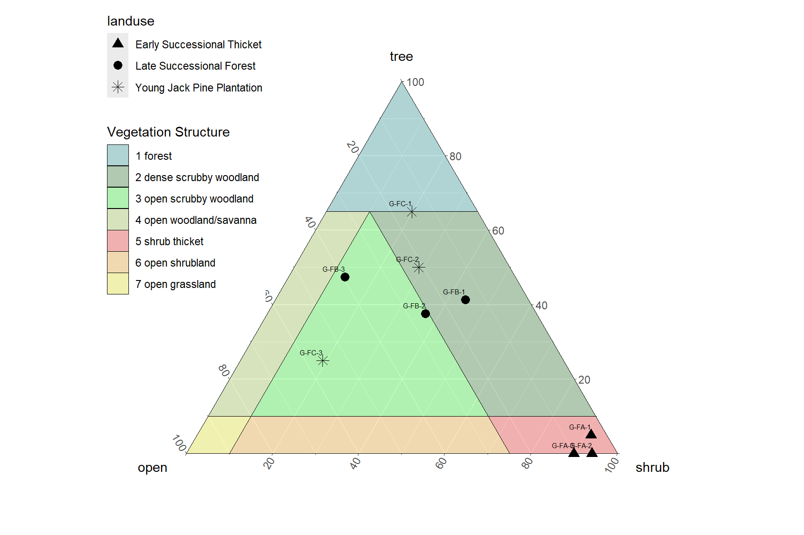

Chapter 4 Structure
This analysis of vegnasis package creates a vegetation profile by broadly defined plant type (growth habit).
# remotes::install_github("phytoclast/vegnasis", dependencies = FALSE)
library(vegnasis)
library(ggplot2)
veg.raw <- vegnasis::nasis.veg
veg <- clean.veg(veg.raw)
veg <- veg |> fill.type.df() |> fill.hts.df()
veg.str <- summary.crown.thickness(veg, breaks = c(c(-1:9)/10,c(2:100)/2)) |> structure.fill.zero() |> subset(type %in% c('tree', 'shrub/vine', 'grass/grasslike', 'forb'))
veg.str.pct <- veg.str |> group_by(type, stratum, stratum.label, bottom, top) |>
summarise(X25 = quantile(Cover, 0.25),
X50 = quantile(Cover, 0.5),
X75 = quantile(Cover, 0.75))
knitr::kable(
head(veg.str, 25), booktabs = TRUE,
caption = 'A table of the first 10 rows of the veg.str.pct data.'
)| plot | type | stratum | stratum.label | bottom | top | Cover |
|---|---|---|---|---|---|---|
| 2022IN131001.P | forb | 3 | 0-0.1 | 0.0 | 0.1 | 0.0 |
| 2022IN131001.P | forb | 4 | 0.1-0.2 | 0.1 | 0.2 | 0.4 |
| 2022IN131001.P | forb | 5 | 0.2-0.3 | 0.2 | 0.3 | 6.5 |
| 2022IN131001.P | forb | 6 | 0.3-0.4 | 0.3 | 0.4 | 6.7 |
| 2022IN131001.P | forb | 7 | 0.4-0.5 | 0.4 | 0.5 | 6.5 |
| 2022IN131001.P | forb | 8 | 0.5-0.6 | 0.5 | 0.6 | 1.6 |
| 2022IN131001.P | forb | 9 | 0.6-0.7 | 0.6 | 0.7 | 1.6 |
| 2022IN131001.P | forb | 10 | 0.7-0.8 | 0.7 | 0.8 | 4.3 |
| 2022IN131001.P | forb | 11 | 0.8-0.9 | 0.8 | 0.9 | 4.3 |
| 2022IN131001.P | forb | 12 | 0.9-1 | 0.9 | 1.0 | 4.1 |
| 2022IN131001.P | forb | 13 | 1-1.5 | 1.0 | 1.5 | 4.1 |
| 2022IN131001.P | forb | 14 | 1.5-2 | 1.5 | 2.0 | 0.0 |
| 2022IN131001.P | forb | 15 | 2-2.5 | 2.0 | 2.5 | 0.0 |
| 2022IN131001.P | forb | 16 | 2.5-3 | 2.5 | 3.0 | 0.0 |
| 2022IN131001.P | grass/grasslike | 3 | 0-0.1 | 0.0 | 0.1 | 0.0 |
| 2022IN131001.P | grass/grasslike | 4 | 0.1-0.2 | 0.1 | 0.2 | 0.0 |
| 2022IN131001.P | grass/grasslike | 5 | 0.2-0.3 | 0.2 | 0.3 | 0.0 |
| 2022IN131001.P | grass/grasslike | 6 | 0.3-0.4 | 0.3 | 0.4 | 0.0 |
| 2022IN131001.P | grass/grasslike | 7 | 0.4-0.5 | 0.4 | 0.5 | 99.0 |
| 2022IN131001.P | grass/grasslike | 8 | 0.5-0.6 | 0.5 | 0.6 | 99.0 |
| 2022IN131001.P | grass/grasslike | 9 | 0.6-0.7 | 0.6 | 0.7 | 99.0 |
| 2022IN131001.P | grass/grasslike | 10 | 0.7-0.8 | 0.7 | 0.8 | 99.0 |
| 2022IN131001.P | grass/grasslike | 11 | 0.8-0.9 | 0.8 | 0.9 | 99.0 |
| 2022IN131001.P | grass/grasslike | 12 | 0.9-1 | 0.9 | 1.0 | 99.0 |
| 2022IN131001.P | grass/grasslike | 13 | 1-1.5 | 1.0 | 1.5 | 9.7 |
ggplot(veg.str.pct, aes(x = top, y = X50, col=type)) +
# plot median
geom_line() +
# plot quantiles
geom_ribbon(aes(ymin = X25, ymax = X75, x = top, fill=type), alpha = 0.2) +
coord_flip() +
theme(legend.position = "none")+
scale_x_continuous(name='height (m)', breaks=c(0:100)*5, minor_breaks = NULL, limits = c(0,40))+
scale_y_continuous(name='cover')+
facet_wrap(~ type, scales = "free_x", nrow=1)
Figure 4.1: Structure of plot collection.
#Custom transformation as a function passing a parameter to existing function. Default sigma of trans = 'pseudo_log' is 1, so in this case, calling the custom function with sigma = 1 is the same as calling trans = 'pseudo_log'. Call custom transformation as trans = 'ps2'. Ggplot appends '_trans' to the name of the function called, so our function needs to have this appended to its name. But in this data set, trans='sqrt' is preferable as it doesn't overly compress the highest canopy.
ps2_trans <- function() {
scales::pseudo_log_trans(sigma = 1)
}
ggplot(veg.str.pct, aes(x = top, y = X50, col=type)) +
# plot median
geom_line() +
# plot quantiles
geom_ribbon(aes(ymin = X25, ymax = X75, x = top, fill=type), alpha = 0.2) +
coord_flip() +
theme(legend.position = "none")+
scale_x_continuous(name='height (m)', breaks=c(c(0:4),c(1:100)*5), minor_breaks = NULL, limits = c(0,40), trans = 'sqrt')+
scale_y_continuous(name='cover')+
facet_wrap(~ type, scales = "free_x", nrow=1)

Figure 4.2: Structure of plot collection, rescaled.